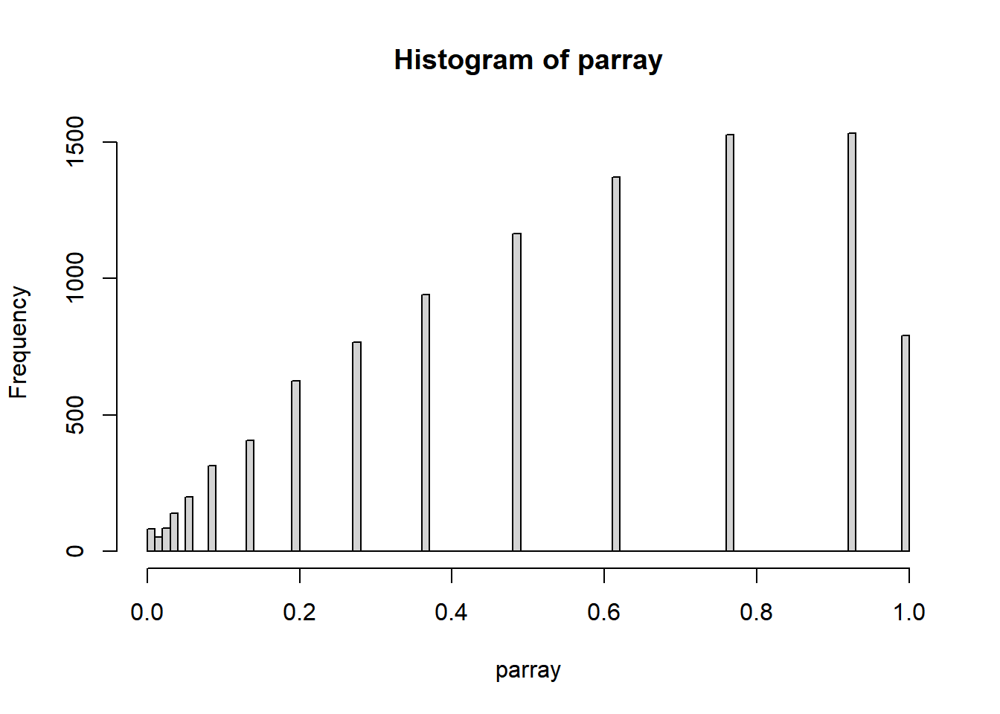

11 P Values and Multiple Hypotheses
11.1 Interpreting p values
Let’s start by checking our understanding of a p value.
11.2 P-value hacking
Let’s go back to the coin tossing example. We did not reject the null hypothesis (that the coin is fair) at a level of 5%—even though we “knew” that it is unfair. After all, probHead was chosen as 0.6. Let’s suppose we now start looking at different test statistics. Perhaps the number of consecutive series of 3 or more heads. Or the number of heads in the first 50 coin flips. And so on. A t some point we will find a test that happens to result in a small p-value, even if just by chance (after all, the probability for the p-value to be less than 0.05 under the null hypothesis—fair coin—is one in twenty).
There is a xkcd comic which illustrates this issue in the context of selective reporting. We just did what is called p-value hacking. You see what the problem is: in our zeal to prove our point we tortured the data until some statistic did what we wanted. A related tactic is hypothesis switching or HARKing – hypothesizing after the results are known: we have a dataset, maybe we have invested a lot of time and money into assembling it, so we need results. We come up with lots of different null hypotheses and test statistics, test them, and iterate, until we can report something.
Let’s try running our binomial test on a fair coin, and see what we get:
numFlips = 100
probHead = 0.5
coinFlips = sample(c("H", "T"), size = numFlips,
replace = TRUE, prob = c(probHead, 1 - probHead))
numHeads <- sum(coinFlips == "H")
pval <- binom.test(x = numHeads, n = numFlips, p = 0.5)$p.value
pval[1] 0.4841184This p value is probably relatively large. But what if we keep on repeating the experiment?
#Let's make a function for performing our experiment
flip_coin <- function(numFlips, probHead){
numFlips = 100
probHead = 0.50
coinFlips = sample(c("H", "T"), size = numFlips,
replace = TRUE, prob = c(probHead, 1 - probHead))
numHeads <- sum(coinFlips == "H")
pval <- binom.test(x = numHeads, n = numFlips, p = 0.5)$p.value
return(pval)
}
#And then run it 10000 times
parray <- replicate(10000, flip_coin(1000, 0.5), simplify=TRUE)
hist(parray, breaks=100)
min(parray)[1] 3.216002e-0511.3 The Multiple Testing Problem
In modern biology, we are often conducting hundreds or thousands of statistical tests on high-throughput data. This means that even a low false positive rate can cause there to be a large number of cases where we falsely reject the null hypothesis. Luckily, there are ways we can correct our rejection threshold or p values to limit the type I error.